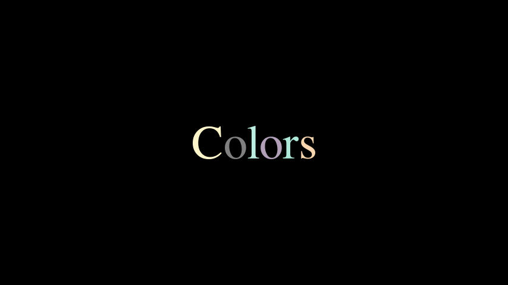

Using Text#
There are two different ways by which you can render Text in videos:
Using Pango (
text_mobject)Using LaTeX (
tex_mobject)
If you want to render simple text, you should use either Text or
MarkupText, or one of its derivatives like Paragraph.
See Text Without LaTeX for more information.
LaTeX should be used when you need mathematical typesetting. See Text With LaTeX for more information.
Text Without LaTeX#
The simplest way to add text to your animations is to use the Text
class. It uses the Pango library to render text. With Pango, you can also
render non-English alphabets like 你好 or こんにちは or 안녕하세요 or
مرحبا بالعالم.
Here is a simple Hello World animation.
Example: HelloWorld ¶
from manim import *
class HelloWorld(Scene):
def construct(self):
text = Text("Hello world", font_size=144)
self.add(text)
References: Text
You can also use MarkupText which allows the use of PangoMarkup
(see the documentation of MarkupText for details) to render text.
For example:
Example: SingleLineColor ¶
from manim import *
class SingleLineColor(Scene):
def construct(self):
text = MarkupText(
f'all in red <span fgcolor="{YELLOW}">except this</span>', color=RED
)
self.add(text)
References: MarkupText
Working with Text#
This section explains the properties of Text and how can it be used
in your animations.
Using Fonts#
You can set a different font using font.
备注
The font used must be installed in your system, and Pango should know
about it. You can get a list of fonts using manimpango.list_fonts().
>>> import manimpango
>>> manimpango.list_fonts()
[...]
Example: FontsExample ¶
from manim import *
class FontsExample(Scene):
def construct(self):
ft = Text("Noto Sans", font="Noto Sans")
self.add(ft)
Setting Slant and Weight#
Slant is the style of the Text, and it can be NORMAL (the default),
ITALIC or OBLIQUE. Usually, for many fonts both ITALIC and
OBLIQUE look similar, but ITALIC uses Roman Style, whereas
OBLIQUE uses Italic Style.
Weight specifies the boldness of a font. You can see a list of weights in
manimpango.Weight.
Example: SlantsExample ¶
from manim import *
class SlantsExample(Scene):
def construct(self):
a = Text("Italic", slant=ITALIC)
self.add(a)
Example: DifferentWeight ¶
from manim import *
class DifferentWeight(Scene):
def construct(self):
import manimpango
g = VGroup()
weight_list = dict(
sorted(
{
weight: manimpango.Weight(weight).value
for weight in manimpango.Weight
}.items(),
key=lambda x: x[1],
)
)
for weight in weight_list:
g += Text(weight.name, weight=weight.name, font="Open Sans")
self.add(g.arrange(DOWN).scale(0.5))
Using Colors#
You can set the color of the text using color:
Example: SimpleColor ¶
from manim import *
class SimpleColor(Scene):
def construct(self):
col = Text("RED COLOR", color=RED)
self.add(col)
You can use utilities like t2c for coloring specific characters.
This may be problematic if your text contains ligatures
as explained in Iterating Text.
t2c accepts two types of dictionaries,
The keys can contain indices like
[2:-1]or[4:8], this works similar to how slicing works in Python. The values should be the color of the Text fromColor.The keys contain words or characters which should be colored separately and the values should be the color from
Color:
Example: Textt2cExample ¶
from manim import *
class Textt2cExample(Scene):
def construct(self):
t2cindices = Text('Hello', t2c={'[1:-1]': BLUE}).move_to(LEFT)
t2cwords = Text('World',t2c={'rl':RED}).next_to(t2cindices, RIGHT)
self.add(t2cindices, t2cwords)
If you want to avoid problems when using colors (due to ligatures), consider using
MarkupText.
Using Gradients#
You can add a gradient using gradient. The value must
be an iterable of any length:
Example: GradientExample ¶
from manim import *
class GradientExample(Scene):
def construct(self):
t = Text("Hello", gradient=(RED, BLUE, GREEN), font_size=96)
self.add(t)
You can also use t2g for gradients with specific
characters of the text. It shares a similar syntax to the
interface for colors:
Example: t2gExample ¶
from manim import *
class t2gExample(Scene):
def construct(self):
t2gindices = Text(
'Hello',
t2g={
'[1:-1]': (RED,GREEN),
},
).move_to(LEFT)
t2gwords = Text(
'World',
t2g={
'World':(RED,BLUE),
},
).next_to(t2gindices, RIGHT)
self.add(t2gindices, t2gwords)
Setting Line Spacing#
You can set the line spacing using line_spacing:
Example: LineSpacing ¶
from manim import *
class LineSpacing(Scene):
def construct(self):
a = Text("Hello\nWorld", line_spacing=1)
b = Text("Hello\nWorld", line_spacing=4)
self.add(Group(a,b).arrange(LEFT, buff=5))
Disabling Ligatures#
By disabling ligatures you would get a one-to-one mapping between characters and submobjects. This fixes the issues with coloring text.
警告
Be aware that using this method with text that heavily depends on ligatures (Arabic text) may yield unexpected results.
You can disable ligatures by passing disable_ligatures to
Text. For example:
Example: DisableLigature ¶
from manim import *
class DisableLigature(Scene):
def construct(self):
li = Text("fl ligature",font_size=96)
nli = Text("fl ligature", disable_ligatures=True, font_size=96)
self.add(Group(li, nli).arrange(DOWN, buff=.8))
Iterating Text#
Text objects behave like VGroups. Therefore, you can slice and index
the text.
For example, you can set each letter to different color by iterating it.
Example: IterateColor ¶
from manim import *
class IterateColor(Scene):
def construct(self):
text = Text("Colors", font_size=96)
for letter in text:
letter.set_color(random_bright_color())
self.add(text)
警告
Please note that Ligature can cause problems here. If you need a
one-to-one mapping of characters to submobjects you should pass
the disable_ligatures parameter to Text.
See Disabling Ligatures.
Working with MarkupText#
MarkupText is similar to Text, the only difference between them is
that this accepts and processes PangoMarkup (which is similar to
html), instead of just rendering plain text.
Consult the documentation of MarkupText for more details
and further references about PangoMarkup.
Example: MarkupTest ¶
from manim import *
class MarkupTest(Scene):
def construct(self):
text = MarkupText(
f'<span underline="double" underline_color="green">double green underline</span> in red text<span fgcolor="{YELLOW}"> except this</span>',
color=RED,
font_size=34
)
self.add(text)
Text With LaTeX#
Just as you can use Text to add text to your videos, you can
use Tex to insert LaTeX.
For example,
Example: HelloLaTeX ¶
from manim import *
class HelloLaTeX(Scene):
def construct(self):
tex = Tex(r"\LaTeX", font_size=144)
self.add(tex)
备注
Note that we are using a raw string (r'...') instead of a regular string ('...').
This is because TeX code uses a lot of special characters - like \ for example - that
have special meaning within a regular python string. An alternative would have been to
write \\ to escape the backslash: Tex('\\LaTeX').
Working with MathTex#
Everything passed to MathTex is in math mode by default. To be more precise,
MathTex is processed within an align* environment. You can achieve a
similar effect with Tex by enclosing your formula with $ symbols:
$\xrightarrow{x^6y^8}$:
Example: MathTeXDemo ¶
from manim import *
class MathTeXDemo(Scene):
def construct(self):
rtarrow0 = MathTex(r"\xrightarrow{x^6y^8}", font_size=96)
rtarrow1 = Tex(r"$\xrightarrow{x^6y^8}$", font_size=96)
self.add(VGroup(rtarrow0, rtarrow1).arrange(DOWN))
LaTeX commands and keyword arguments#
We can use any standard LaTeX commands in the AMS maths packages. Such
as the mathtt math-text type or the looparrowright arrow.
Example: AMSLaTeX ¶
from manim import *
class AMSLaTeX(Scene):
def construct(self):
tex = Tex(r'$\mathtt{H} \looparrowright$ \LaTeX', font_size=144)
self.add(tex)
On the Manim side, the Tex class also accepts attributes to
change the appearance of the output. This is very similar to the
Text class. For example, the color keyword changes the
color of the TeX mobject.
Example: LaTeXAttributes ¶
from manim import *
class LaTeXAttributes(Scene):
def construct(self):
tex = Tex(r'Hello \LaTeX', color=BLUE, font_size=144)
self.add(tex)
Extra LaTeX Packages#
Some commands require special packages to be loaded into the TeX template.
For example, to use the mathscr script, we need to add the mathrsfs
package. Since this package isn’t loaded into Manim’s tex template by default,
we have to add it manually.
Example: AddPackageLatex ¶
from manim import *
class AddPackageLatex(Scene):
def construct(self):
myTemplate = TexTemplate()
myTemplate.add_to_preamble(r"\usepackage{mathrsfs}")
tex = Tex(
r"$\mathscr{H} \rightarrow \mathbb{H}$}",
tex_template=myTemplate,
font_size=144,
)
self.add(tex)
Substrings and parts#
The TeX mobject can accept multiple strings as arguments. Afterwards you can
refer to the individual parts either by their index (like tex[1]), or by
selecting parts of the tex code. In this example, we set the color
of the \bigstar using set_color_by_tex():
Example: LaTeXSubstrings ¶
from manim import *
class LaTeXSubstrings(Scene):
def construct(self):
tex = Tex('Hello', r'$\bigstar$', r'\LaTeX', font_size=144)
tex.set_color_by_tex('igsta', RED)
self.add(tex)
Note that set_color_by_tex() colors the entire substring containing
the Tex, not just the specific symbol or Tex expression. Consider the following example:
Example: IncorrectLaTeXSubstringColoring ¶
from manim import *
class IncorrectLaTeXSubstringColoring(Scene):
def construct(self):
equation = MathTex(
r"e^x = x^0 + x^1 + \frac{1}{2} x^2 + \frac{1}{6} x^3 + \cdots + \frac{1}{n!} x^n + \cdots"
)
equation.set_color_by_tex("x", YELLOW)
self.add(equation)
As you can see, this colors the entire equation yellow, contrary to what
may be expected. To color only x yellow, we have to do the following:
Example: CorrectLaTeXSubstringColoring ¶
from manim import *
class CorrectLaTeXSubstringColoring(Scene):
def construct(self):
equation = MathTex(
r"e^x = x^0 + x^1 + \frac{1}{2} x^2 + \frac{1}{6} x^3 + \cdots + \frac{1}{n!} x^n + \cdots",
substrings_to_isolate="x"
)
equation.set_color_by_tex("x", YELLOW)
self.add(equation)
By setting substrings_to_isolate to x, we split up the
MathTex into substrings automatically and isolate the x components
into individual substrings. Only then can set_color_by_tex() be used
to achieve the desired result.
Note that Manim also supports a custom syntax that allows splitting
a TeX string into substrings easily: simply enclose parts of your formula
that you want to isolate with double braces. In the string
MathTex(r"{{ a^2 }} + {{ b^2 }} = {{ c^2 }}"), the rendered mobject
will consist of the substrings a^2, +, b^2, =, and c^2.
This makes transformations between similar text fragments easy
to write using TransformMatchingTex.
Using index_labels to work with complicated strings#
You might sometimes be working with a very complicated MathTex mobject
that makes it difficult to work with its individual components. This is
where the debugging function index_labels() is very useful.
The method shows the index of a mobject’s submobjects, allowing you to easily find the components of the mobject you would like to change.
Example: IndexLabelsMathTex ¶
from manim import *
class IndexLabelsMathTex(Scene):
def construct(self):
text = MathTex(r"\binom{2n}{n+2}", font_size=96)
# index the first (and only) term of the MathTex mob
self.add(index_labels(text[0]))
text[0][1:3].set_color(YELLOW)
text[0][3:6].set_color(RED)
self.add(text)
LaTeX Maths Fonts - The Template Library#
Changing fonts in LaTeX when typesetting mathematical formulae is
trickier than regular text. It requires changing the template that is used
to compile the TeX. Manim comes with a collection of TexFontTemplates
ready for you to use. These templates will all work in math mode:
Example: LaTeXMathFonts ¶
from manim import *
class LaTeXMathFonts(Scene):
def construct(self):
tex = Tex(
r"$x^2 + y^2 = z^2$",
tex_template=TexFontTemplates.french_cursive,
font_size=144,
)
self.add(tex)
Manim also has a TexTemplateLibrary containing the TeX
templates used by 3Blue1Brown. One example is the ctex template,
used for typesetting Chinese script. For this to work, the ctex LaTeX package
must be installed on your system. Furthermore, if you are only
typesetting Text, you probably do not need Tex at all, and
should use Text instead.
Example: LaTeXTemplateLibrary ¶
from manim import *
class LaTeXTemplateLibrary(Scene):
def construct(self):
tex = Tex('Hello 你好 \\LaTeX', tex_template=TexTemplateLibrary.ctex, font_size=144)
self.add(tex)
Aligning formulae#
MathTex mobject is typeset in the LaTeX align*
environment. This means you can use the & alignment character
when typesetting multiline formulae:
Example: LaTeXAlignEnvironment ¶
from manim import *
class LaTeXAlignEnvironment(Scene):
def construct(self):
tex = MathTex(r'f(x) &= 3 + 2 + 1\\ &= 5 + 1 \\ &= 6', font_size=96)
self.add(tex)